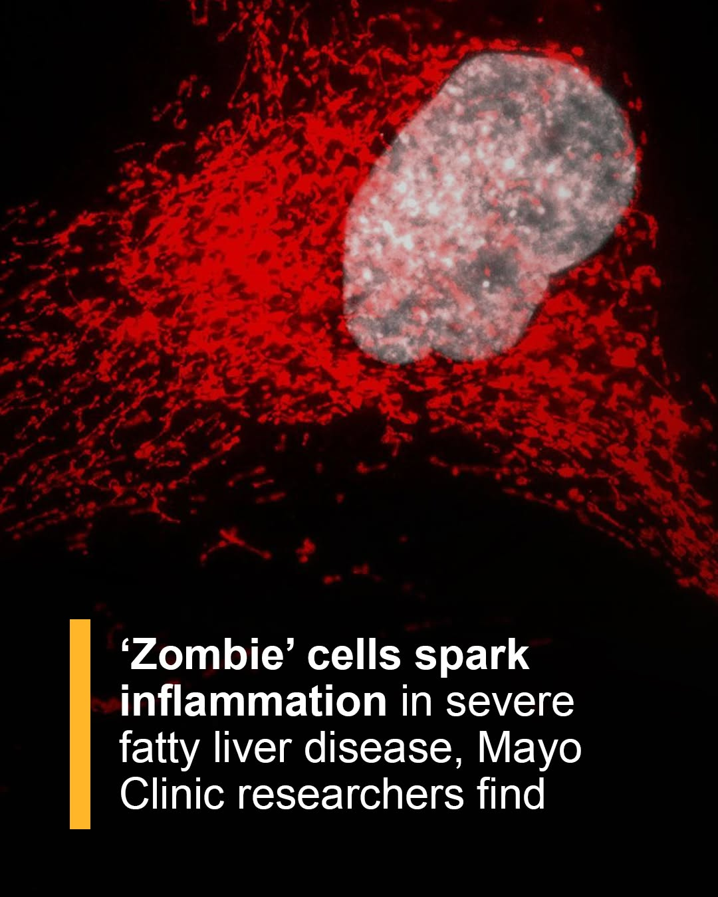

Senescent cells seem to play a major role in progression of severe fatty liver disease, according to new research at the Mayo Clinic.
Drugs and supplements called senolytics that kill these senescent cells might be useful in treating this disease. We will likely see clinical trials on this soon.
#senolyticsHD #fattyliverHD #mayoclinicHD #mashHD #senescenceHD
A new Mayo Clinic study shows how aging "zombie" cells — also known as senescent cells — can trigger harmful inflammation that accelerates metabolic dysfunction‑associated steatohepatitis (MASH), a severe form of fatty liver disease. As obesity rises worldwide, MASH is increasing and is already one of the leading reasons for liver transplantation.
"Liver scarring and inflammation are hallmarks of MASH. If left untreated, it can progress to liver cancer. This is why it's so important to understand the mechanisms driving the disease so that we can prevent it or develop more effective treatments," says lead author Stella Victorelli, Ph.D.
Read more:
newsnetwork.mayoclinic.orgZombie cells spark inflammation in severe fatty liver disease mayo clinic researchers findmayocl.in